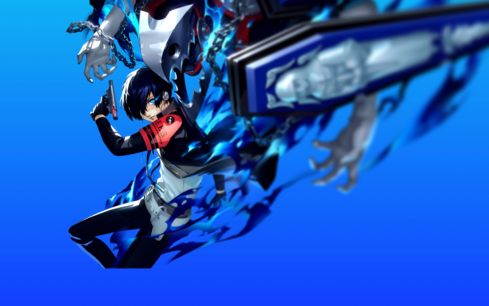
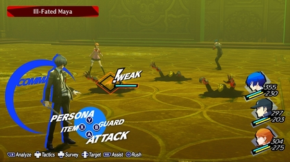
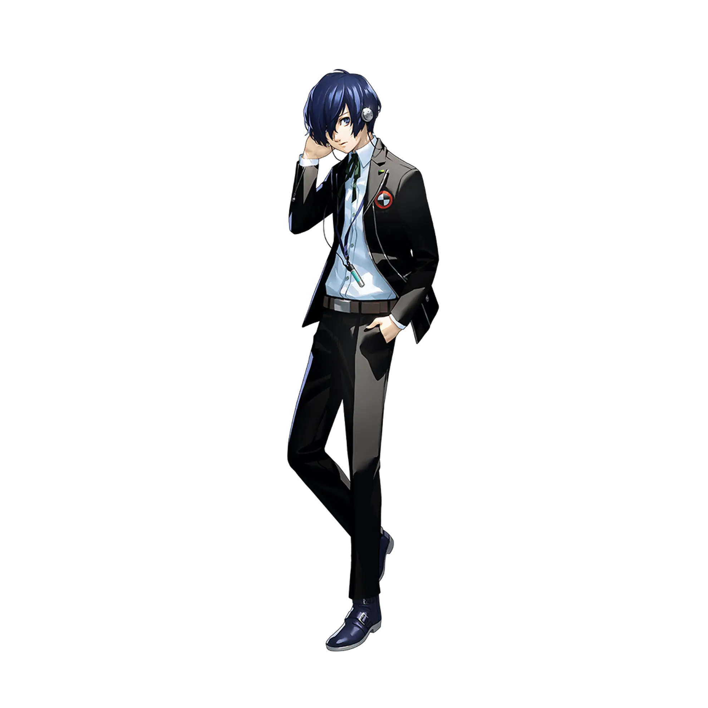
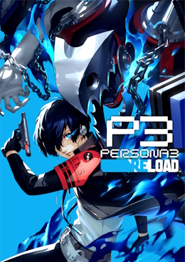
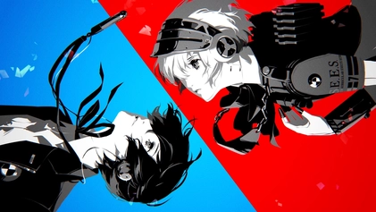
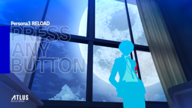
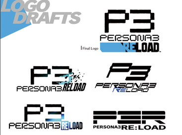
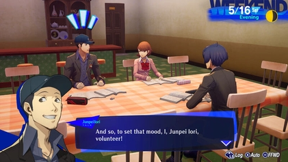

One More
Si golpeas la debilidad de un enemigo o haces un crítico, lo derribas y consigues un turno extra.
ATLUS · 2024 · Remake de Persona 3
"Memento mori" — Recuerda que vas a morir.
Entrar al Tártaro
Abril de 2009. Un estudiante de intercambio llega a la ciudad de Iwatodai para empezar el curso en la Escuela Gekkoukan, en Port Island. La primera noche, al llegar a la residencia, descubre que existe una hora oculta entre un día y el siguiente: la Hora Oscura.
Durante esa hora casi todas las personas se convierten en ataúdes, el cielo se tiñe de verde y aparecen las Sombras, criaturas que devoran la mente de las personas y provocan el Síndrome de Apatía. La escuela se transforma en el Tártaro, una torre gigantesca y cambiante.
El protagonista despierta su Persona y se une al SEES (Escuadrón Especial de Ejecución Extracurricular), un grupo de estudiantes que usan unas pistolas llamadas Evokers para invocar a sus Personas y luchar contra las Sombras.

Cada luna llena aparece una Sombra Grande. Hay doce Sombras Grandes ligadas a los Arcanos, y el Grupo Kirijo afirma que derrotarlas hará desaparecer la Hora Oscura. Pero en realidad, al vencerlas, se reúnen los fragmentos de Muerte, la entidad sellada dentro del protagonista desde el accidente de hace diez años, y se acerca la llegada de Nyx, que significaría el fin de la humanidad.
El misterioso niño Pharos y el estudiante Ryoji Mochizuki son la forma humana de Muerte. La única forma de detener a Nyx es el sacrificio del protagonista, que convierte su alma en el Gran Sello. Episode Aigis (la DLC basada en The Answer) continúa la historia después del final.

Es un estudiante tranquilo e indiferente que siempre lleva audífonos. Quedó huérfano por un accidente hace diez años y por eso se mudó muchas veces de ciudad. Es el líder del SEES en combate y el único que tiene el poder de la Wild Card: puede usar varias Personas y cambiar entre ellas.
En la Velvet Room, Igor y su ayudante Elizabeth te permiten fusionar Personas y registrarlas en el compendio.
No se encontró ningún personaje.
Si golpeas la debilidad de un enemigo o haces un crítico, lo derribas y consigues un turno extra.
Cuando todos los enemigos están derribados, el grupo puede lanzarse a la vez para hacer muchísimo daño.
Después de un One More puedes pasarle el turno a un aliado, que recibe un aumento de poder. Sirve para encadenar debilidades.
Son ataques definitivos únicos de cada personaje. La barra se llena con acciones propias de cada uno, como curar o golpear debilidades.
Hay ataques físicos (Corte, Golpe, Perforación) y elementales (Fuego, Hielo, Electricidad, Viento, Luz y Oscuridad). Usa a Fuuka para analizar a los enemigos.
Úsalos en los relojes del Tártaro para recuperar HP y SP, o para abrir cofres dorados.
Cada bloque termina en una barrera que solo se abre a medida que avanza la historia. En Reload también aparecen las Puertas Mónada, que llevan a zonas opcionales con enemigos más fuertes y mejores recompensas.
Qué hacer en cada mes del año escolar, de abril a enero. Las fechas siguen la ruta 100% de la guía de TenSquare3; el piso del Tártaro es hasta dónde llega esa ruta al terminar el mes.
Cada mes hay un combate importante contra una Sombra Grande. Antes de esa fecha, prepara bien a tu grupo y llena tu inventario.
Hay exámenes en mayo, julio, octubre y diciembre. Estudia los días antes para subir Academics y aprobar con buena nota.
Academics, Charm y Courage tienen 6 rangos cada una. Algunos Social Links y eventos piden un rango mínimo.
Cumple las peticiones de la Velvet Room. Dan objetos y recompensas muy útiles.
Por la noche puedes cocinar, cuidar el huerto o estudiar con tus compañeros para subir estadísticas y mejorar las relaciones.
Reload te deja volver a una tarde o noche de los días anteriores para corregir una mala decisión sin cargar una partida vieja.
Los chicos del SEES (Junpei, Akihiko, Shinjiro, Ken y Koromaru) tienen episodios propios que funcionan como Social Links.
Rescata a las personas desaparecidas antes de la luna llena y sube de nivel poco a poco para no quedarte atrás.
| Stat | 1 | 2 | 3 | 4 | 5 | 6 |
|---|---|---|---|---|---|---|
| Academics | Slacker | Average | Above Average | Smart | Intelligent | Genius |
| Charm | Plain | Unpolished | Confident | Smooth | Popular | Charismatic |
| Courage | Timid | Ordinary | Determined | Tough | Fearless | Badass |
Estudia en la biblioteca, mantente despierto en clase, visita la sala de profesores o trabaja en Be Blue V.
Responde bien en clase, toma café en Mandragora, trabaja en Chargall Café y saca buenas notas en los exámenes.
Canta en el karaoke, ve al cine en Screen Shot, juega en el arcade o acepta el reto de comida en Wilduck.




COMMU Social Links
Cada vínculo corresponde a un Arcano. La fecha de inicio es la que sigue la ruta 100% de la guía de TenSquare3 en GameFAQs. Al subirlos de rango, las Personas de ese Arcano reciben experiencia extra al fusionarlas. Consejo: lleva una Persona del mismo Arcano cuando pases tiempo con esa persona para avanzar más rápido.
